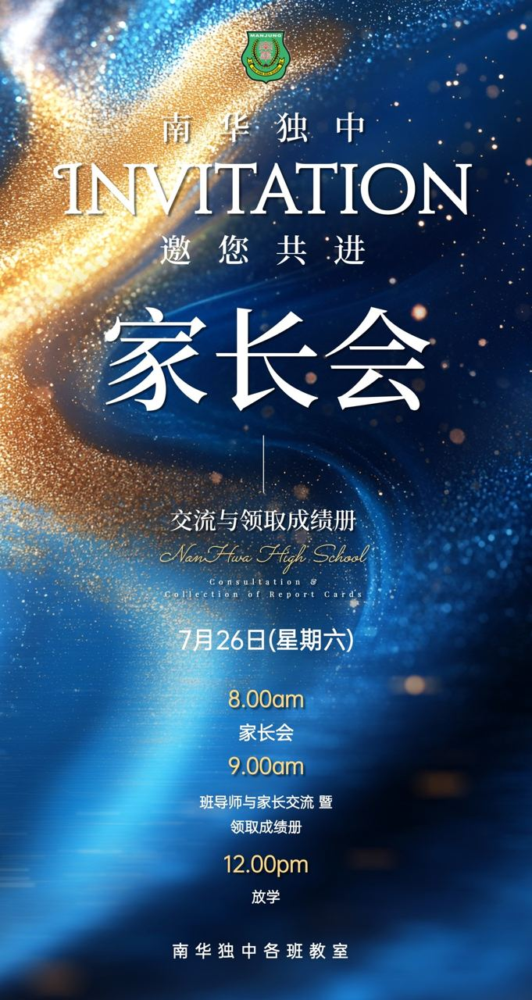
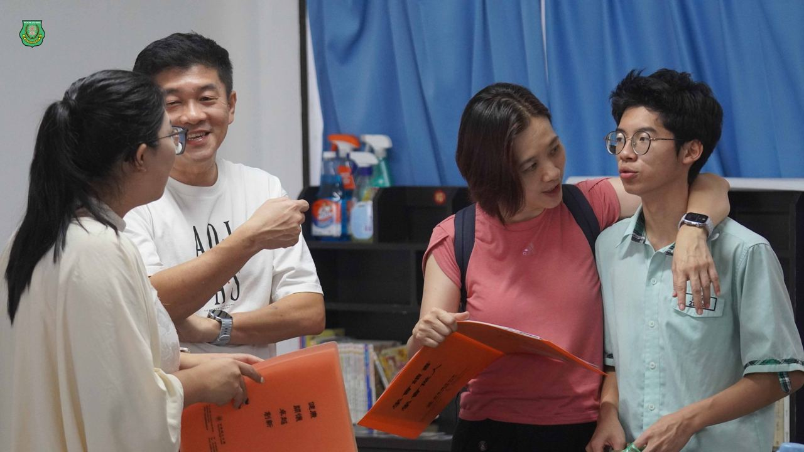
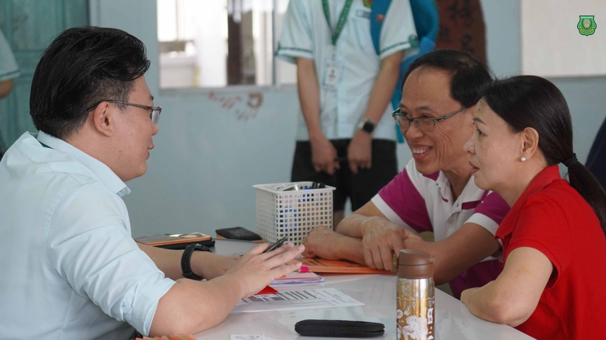
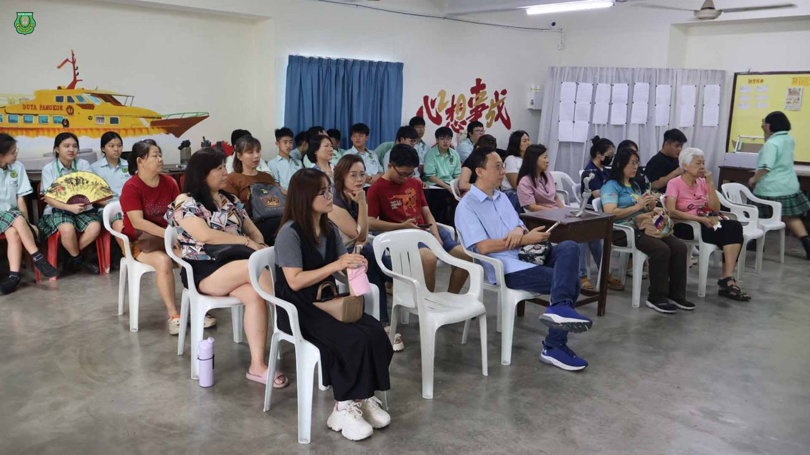
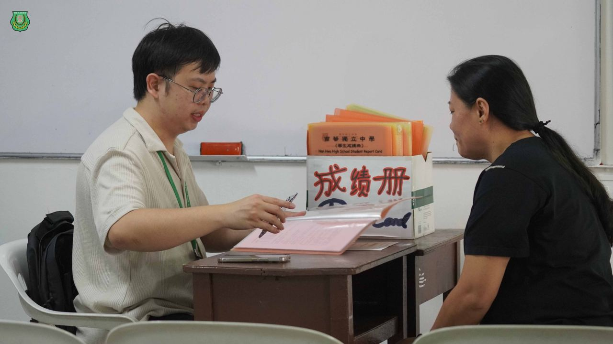
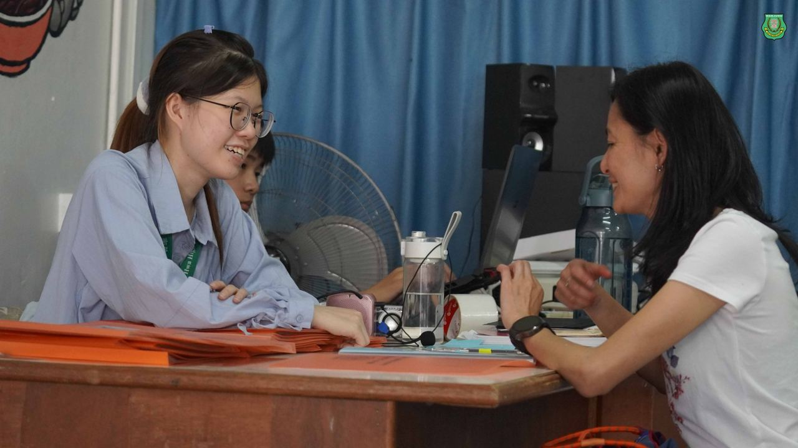
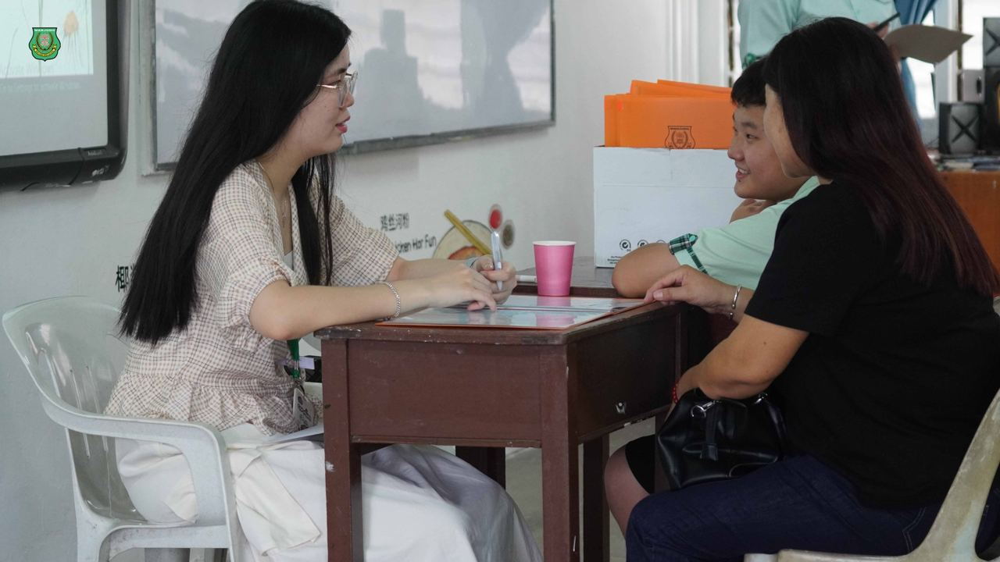
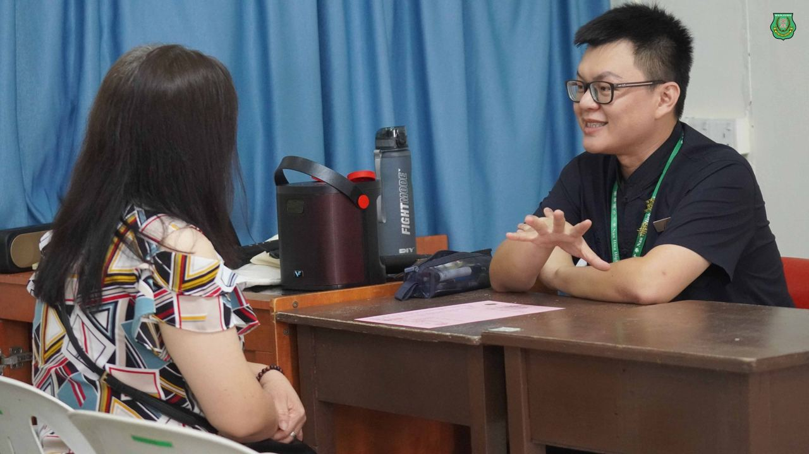

南华独中家长会
南华独中家长会
邀请父母走进教室，孩子却走进他们的心
进行一场真实的教育对话
7月26日清晨，南华独中的校园如常迎来一日的晨曦，只是，这一次踏入教室的，不只是学生，还有他们的父母。南华独中2025年家长会，在形式与精神上迎来一次意义深远的革新：家长们不再整齐划一地坐在礼堂里聆听演出与宣读，而是被孩子亲手迎进了各自的班级，走进了他们日复一日生活、成长的空间。
今年的家长会，突破了过往“集中派发成绩册”的传统模式。13个班级，13间教室，各自筹划、各自布置、各自演绎，每一间教室都是一场独立而诚挚的教育展演。在班导师的带领下，学生们亲自打扫教室、设计展示、准备节目，从课程学习到手工艺作品，从选修课成果到歌唱与器乐演出，家长不仅看见“成绩”，更看见了孩子如何在群体中学习、与同伴协作、与老师同行。
走进教室，就如走进一部部未完的成长纪录片。教室的墙上贴着学习成果，桌面上陈列着学生自制作品，讲台上传来孩子的自信讲解，角落传来轻柔琴音与和声。欢笑声、讲解声、掌声此起彼落，空气中弥漫的不只是温馨与热闹，更是一种看见与被看见的喜悦。
这场别开生面的家长会，让教育真正回到“关系”的本质。家长坐在教室里，不只是旁观者，更是倾听者与参与者；老师站在台前，也不仅是成绩册的发放者，更是陪伴成长的见证人；学生在这一刻，也第一次有机会将学习的“过程”而非“结果”，呈现在最亲密的观众面前。
活动也呼应了学校常年举办的“班级布置比赛”，学生们群策群力，美化空间，构筑的不只是教室，更是一段段珍贵的集体记忆与班级凝聚力。每间教室各具风格，却都映照出同一种信念：教育不是单向灌输，而是多方共育。
许多家长在活动后动容地表示，这次家长会让他们第一次真正“走进了孩子的世界”。不只是成绩的对话，更是成长的理解。不只是校方的介绍，更是价值的传递。南华独中在这次尝试中，让“家校合作”不只是口号，而成为真实发生的教育事件。
校长陈丽冰博士表示“教育即生活，当教育回归生活，学习自然扎根。当家长回到教室，孩子的成长，也终能被理解、被支持、被珍视。在家长会今日，邀请父母走进教室，孩子却走进了他们的心。”







